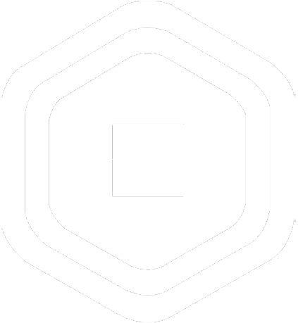
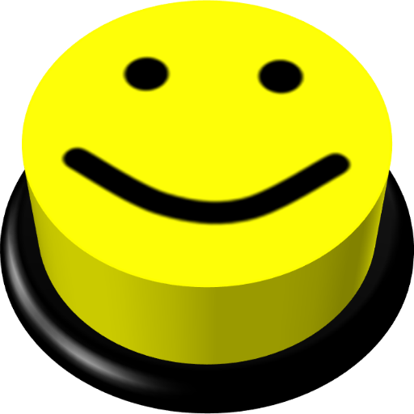
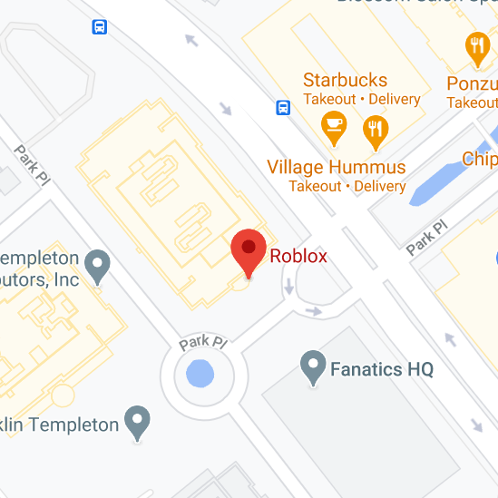

Roblox er leikjavefsíða sem gerir manni kleift að spila og forrita alls konar leiki sem eru gerðir af öðrum notendum vefsíðunnar.
Leikirnir sem eru forritaðir á Roblox eru hannaðir á forritunarmálinu Lua.
Roblox var hannað af David Baszucki og Erik Cassel árið 2004 og gefið út fyrir alla árið 2006.
Það eru yfir 2,2 milljarðar reikninga á vefsíðunni frá og með 8. Desember 2020 en vefsíðan hefur ekki alltaf verið svona rosalega stór, Í kringum nóvember voru bara 51 milljón reikningar inná Roblox vefsíðunni og náði svo 1 milljarði reikninga 12. Mars 2019 og er enn að vaxa rosa hratt nú til dags.
The Roblox Logo
Gjaldmiðillinn í Roblox
Það er ókeypis að spila langflesta leiki á Roblox og að spila á vefsíðunni yfir höfuð, það er hægt að kaupa sérstakan gjaldmiðil á vefsíðunni sem kallast „Robux“ sem maður getur notað til að kaupa allskonar fyrir persónuna þína, sérstaka leiki sem kosta eða fríðindi í leikjum sem þú kaupir þá af öðrum notendum.
Svo var líka til gjaldmiðill í Roblox sem var ókeypis en maður fékk bara 10 á dag sem kallað var „Tix“ eða „Tickets“.sem var bara hægt að nota í föt og aukahluti fyrir persónuna þína, en „Tix“ voru tekinn út af vefsíðunni 14. Apríl 2016 og allt „Tix“ sem fólk átti var alveg þurrkað út.

Robux merkið
Oof hljóðið
Oof hljóðið er hljóð sem heyrist þegar þú deyrð eða drepur þig í Roblox, Hljóðið er líka notað sem „Meme“ á allskonar hátt og er mjög þekkt fyrir utan Roblox.

Oof meme andlitið og oof hljóðið
Leikir á Roblox
Leikirnir sem eru aðgengilegir í Roblox er aðalmálið fyrir fólk sem er bara á vefsíðunni til að spila og ekkert annað, það eru til svo margur leikir á roblox alveg frá mjög einföldum leikjum til að tala við fólk og ekkert annað og alveg til fullt af herkænsku leikjum, bílaleikjum og hlutverkjaleikjum.
Það er mjög skemmtilegt að sjá hvað fólk býr til inná Roblox og manni leiðist aldrei sem spilandi,
leikir eru samt mismunandi vel gerðir, sumir eru svona mjög eðlilegir kubbaleikir en aðrir hafa alveg magnaða upplausn og frábær gæði, illa gerðir leikir eru stundum mjög frægir en það gerist ekki það oft,
Frægustu leikir inná Roblox eru Adopt me, Murder Mystery 2 og Bloxburg, þó að persónulega hata ég Adopt me af því að hann er frekar illa gerður og í næstum hvert sinn sem leikurinn er uppfærður eru um 1.5-2 milljónir að spila hann á sama tíma sem crashar alla síðuna frekar oft.
Official Roblox Trailer 2020
Mjög vel gerður trailer sem sýnir bara rétt svo smávegis hvað er hægt að gera á þessari risastóru vefsíðu
Roblox HQ staðsetning, 970 Park Pl, San Mateo, CA 94403, Bandaríkjunum

DL listi
Nafn:
Alexander Már og Darri Jökull
Tölvupóstar:
alex.snaebjorns@gmail.com og darrijokull@gmail.com